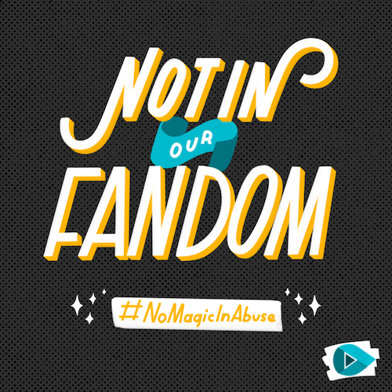

The upcoming release of Fantastic Beasts: The Crimes of Grindelwald and the continuation of stories in the Harry Potter universe has been darkened by the continued casting of Johnny Depp as a major character (Grindelwald), despite domestic abuse allegations.
In 2016, accompanying their divorce filings, Amber Heard filed for a restraining order against Depp and shared her story of physical abuse that had escalated over a period of months. At the time of the report, Depp had already been cast and filmed the first installment of the Fantastic Beasts franchise, was released in November 2016. Depp was only featured in the movie for a few seconds and the studio could have recast him before the sequel 2 years later. Instead, those involved in the movie - especially David Yates and J.K. Rowling - have continued to defend Depp and prioritize his casting over the impact of Heard and other survivors. Yates went as far as to belittle and undermine Heard while uplifting Depp.
The creators of the stories we hold so dear have let us down, but the Harry Potter community has always been defined by more than what Warner Bros. or J.K. Rowling have provided us. The fandom belongs to us.
The reach of the Harry Potter community knows no bounds, which is why it is so crucial for us to take a stand now. Nearly 1 in 4 women and 1 in 7 men have been victims of severe physical violence by an intimate partner. We owe it to them to stand up and speak out.
But wait, I have a question
How do we know the allegations are true? Shouldn’t we wait for the courts to decide?
The most important thing we can do is believe a survivor.
The courts are responsible for deciding on legal ramifications, but communities and companies are free to hold higher standards. We can choose to support a survivor by believing them first. Like sexual assault, domestic violence abuse is difficult to prove in court. That doesn’t make the experiences any less real.
Aren’t there two sides to every story?
Yes, stories have different angles. However, the narrator matters. Choosing to elevate the story of an accused abuser to not only equal but more important than that of the survivor, is choosing the side of the abuser.
Often, when we listen to “both sides of a story,” we are hearing an abuser attempt to explain away their actions. Not realizing an action is abuse, or claiming it is happening for another reason, does not change the fact that it is abuse.
Additionally, the nature of abuse makes it hard to provide the kind of evidence that some say they require to believe a survivor. Abuse often takes place in a private space, with someone the survivor already knows. Sometimes the only trauma is emotional or mental. But that does not make the impact any less severe.
Though the absence of physical evidence or a court preceding does not make an allegation of abuse any less important, there are graphic photos of Amber’s bruises, a well as testimony and digital evidence from Depp’s business manager and a friend of Amber’s who witnessed and were aware of some of the events.
In the end, every survivor’s experience deserves to be heard.
Why can’t I separate the artist from the art?
As an individual, it may seem simple to separate the artist from their craft, but in our society, movies like Fantastic Beasts contribute to a larger narrative that we can’t ignore. Stories like Fantastic Beasts are reaching the next generation and will contribute to shaping fans values, just as the original series did for so many. Powerful stories change us. When we allow them to be undermined by the casting and elevation of an abuser in such a prominent role, we corrupt that story’s power.
The power dynamic that contributes to abuse relies on abusers maintaining their social power, and survivors worrying that no one will believe them against their powerful abuser. One of the ways we can dismantle that power is by speaking out against their involvement in stories we consume, which can mean boycotting it or educating others when consuming it. Recent actions by large companies to drop abusers from their lineups occurred because of the voices of fans. Companies are more likely to cut ties with abusers when it is in their financial and PR best-interest.
Abuse does not exist in a vacuum. Those around us who are survivors - whether we know it or not - observe how we react to these issues. In the #MeToo era, separating the actor from the story is no longer enough.
Are you saying I have to boycott?
There are many ways to support survivors and encourage a conversation on this important issue. Boycotting the movie opening weekend or until it is out of theaters is one way to express this, as Box Office numbers are a concrete way studio executives and the media measures the success of a film.
However, making your voice heard and starting conversations in your communities about healthy relationships and supporting survivors over abusers is equally important. Check back leading up to the movie for resources on having these conversations with people at the theater and in other contexts. Our goal for this campaign is to encourage you to think critically about the impact of the media you consume and bring that conversation into your communities.
Will boycotting hurt all people involved in the movie?
Nope! Films produced at this level are made by union stagehands, actors, creative staff, etc. Their pay is negotiated far in advance. When a film’s box office value is low, those affected negatively are the same people affected from its success - the production company. Box Office numbers are a concrete way studio executives and the media measures the success of a film. Boycotting Fantastic Beasts: Crimes of Grindelwald during its opening weekend, or until it is out of theaters, is a way to express our concern with the studios casting of Johnny Depp, despite his domestic abuse allegations. Abuse does not exist in a vacuum and we must stand with survivors.
Learn The Issues

Getting Help
You have the right to safety in your relationships. This is not your fault.
The National Domestic Violence Hotline is a 24/7 hotline in English and Spanish. You can call them at 1−800−799−7233 or visit thehotline.org to chat with an advocate. They can help you form a safety plan and connect you to local resources.
Supporting Survivors
If a friend or family member discloses that they are a survivor of intimate partner violence, here are some ways you can tell them you support them:
- You are not alone, I am here with you.
- I believe you
- There are many resources that can help you.
Do not press for details or ask invasive questions and mirror the language they use. For example, if they describe the abuse as "this thing that's been happening", use similar words when discussing it with them. Don't escalate by using words like domestic abuse or assault, as they might not be comfortable using those. Sexual violence is crime of power.Support the survivor by mirroring their language and offering resources without prescribing what action they should take. Never pressure a survivor to report.
Take Action
No Magic In Abuse: Empowering Fans to Take Action
August 2018#MeToo has woken our culture up to the reality many survivors face every day, but the next step is holding fandoms, networks, and media companies responsible for cutting ties with abusers.
Read MoreSign up for our #NoMagicInAbuse task force
TodayBe the first to know when new resources are released and receive email on the latest campaign news.

October 2018
Join Harry Potter fans in boycotting Fantastic Beasts: The Crimes Of Grindelwald opening weekend. The people involved in the film as cast and crew will still be paid, but a lower box office weekend for such a major film, will send a signal that Harry Potter fans support survivors and oppose Depp’s involvement.
Sign itSupport Survivors: Campaign shirt
October 2018Whether you're boycotting that weekend or attending the film, wear this shirt to show that you stand with survivors.
Learn MoreSpread the word
We need your help! Use the hashtag #NoMagicInAbuse on social media to add your voice to the discussion.
Harry Potter is the best selling book series of all time, with more than 500 million copies sold worldwide. All seven books individually fall into the impressive category of books selling between 50 and 100+ million copies. Each Harry Potter film ranked in the top three in worldwide box office performance the year they were released.
Harry Potter taught us to be brave and stand up for what we believe in, to do the right thing for the greater good. It taught us about friendship, love, loyalty, and loss. One of the most important things it taught us is that it is okay to be critical of what you love. Harry learned that his heroes, idols, and parental figures were not perfect or infallible. And while we love this series and Fantastic Beasts, the creators of these stories have let us down by casting an abuser in the film. We cannot accept a stance against survivors, and cannot separate the art from the artist case because it sends a message that what happened to them doesn’t matter. It does matter. We stand with all survivors.
Sample Messages (make them your own)
#TheCrimesOfGrindelwald include domestic abuse. By casting Johnny Depp as a prominent character in their film series, Warner Bros. is choosing abusers over survivors. #NoMagicInAbuse Tweet this
I support survivors, so I'm pledging not to watch Fantastic Beasts opening weekend because of Johnny Depp's role in the film. #NoMagicInAbuse Tweet this
1 in 4 women and 1 in 9 men experience intimate partner violence in their lifetime. Casting Johnny Depp in Fantastic Beasts is not okay. #NoMagicInAbuse Tweet this
Download graphics for social